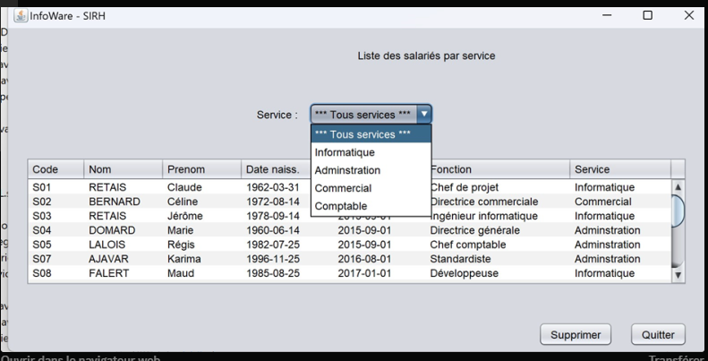
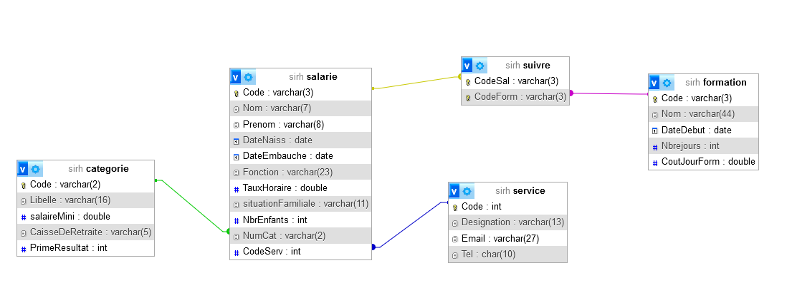
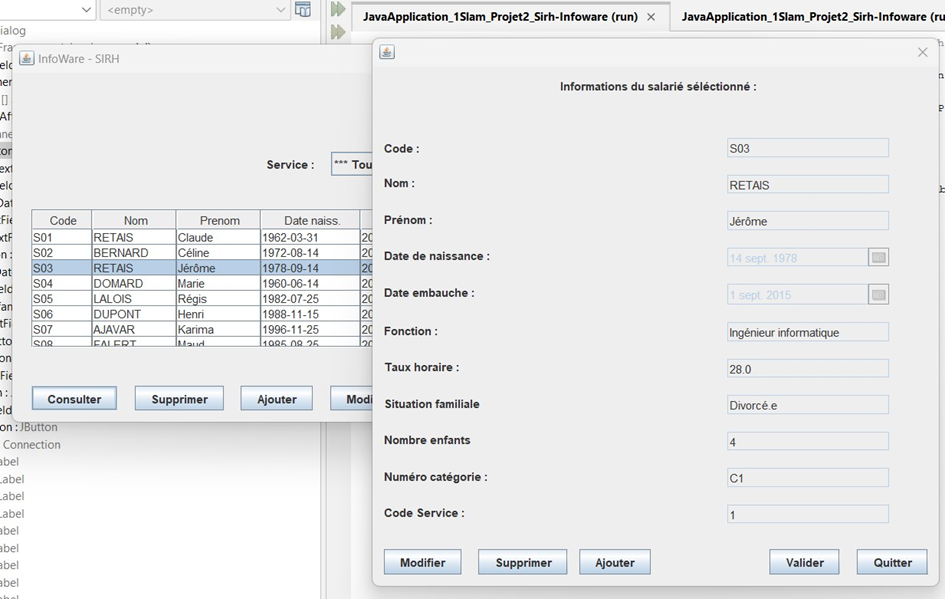

Projet 1
Description du projet
Pendant ma première année, j’ai participé par groupe de 4 au développement de l’application INFOWARE-SIRH, un logiciel destiné à la gestion des ressources humaines pour l’entreprise INFOWARE, spécialisée dans la distribution de matériel informatique. Ce projet avait pour objectif principal de créer une application de gestion des salariés reposant sur une base de données MariaDB existante.
Technologies
- SQL/ Java
- Autres outils ou frameworks utilisés
Compétences
▸Traiter des demandes concernant les applications Participer à l’ évolution d’ un site Web exploitant les données de l’ organisation. Réaliser les tests d’ intégration et d’ acceptation d’ un service


